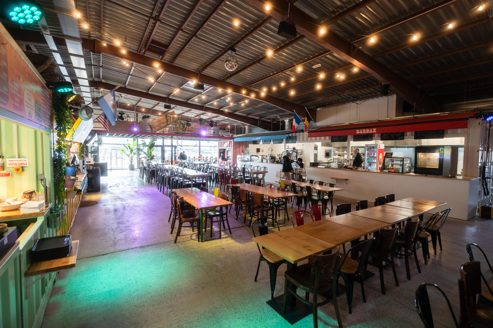
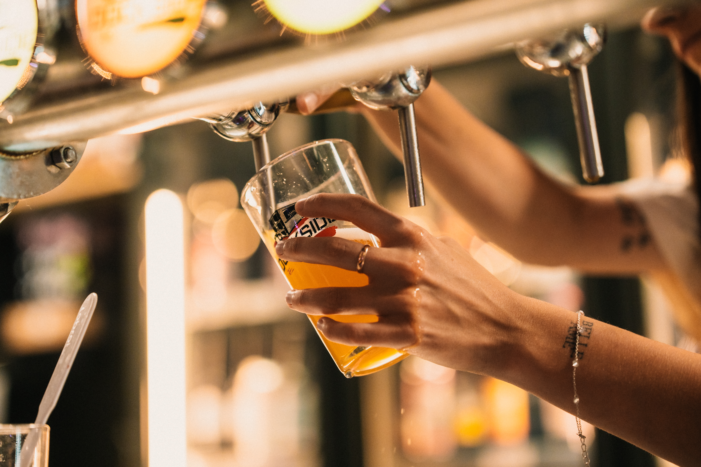
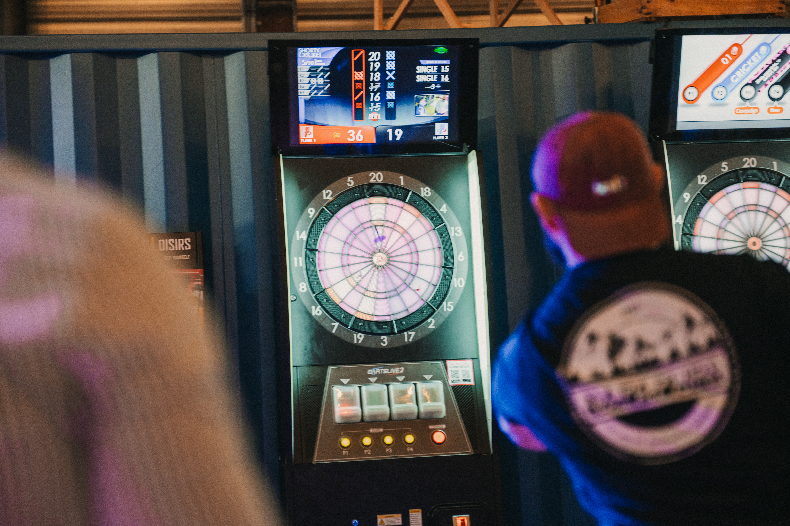
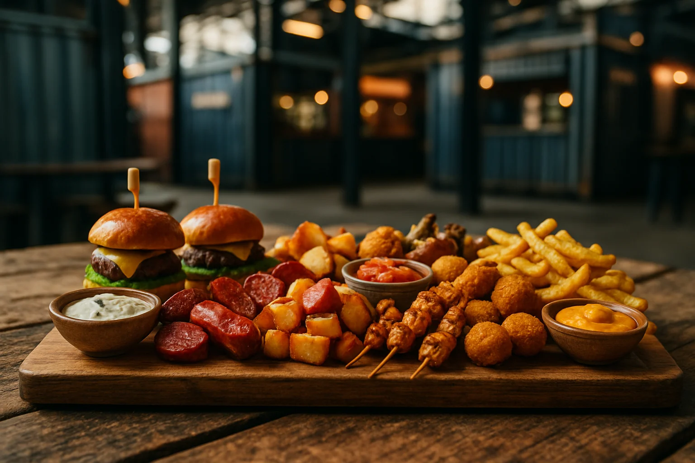
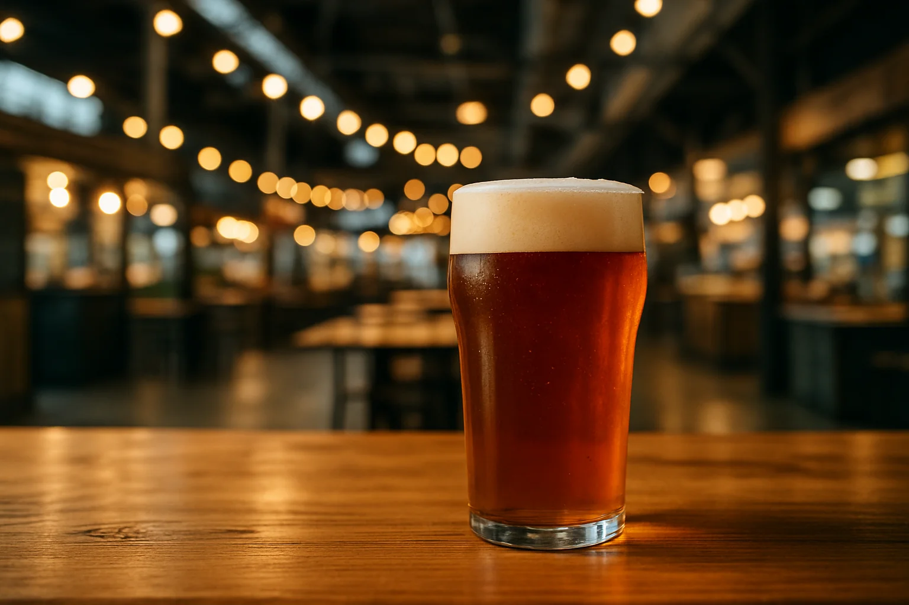

Démo privée
Cette proposition de menu digital est protégée.
Saisissez le code d'accès communiqué par votre contact.
Food hall & microbrasserie — Saint-Herblain
7 kiosques de restaurateurs, un bar central et des bières brassées sur place — parce qu'il est toujours l'heure de l'apéro quelque part.
Food hall Microbrasserie 7 kiosques + 1 bar central Concerts & soirées
Sept restaurateurs indépendants autour d'un bar central : des planches à partager et des plats maison à base de produits frais, une inspiration venue du monde entier, et des cuisines qui évoluent au fil des saisons.
Exemples d'univers d'après les catégories publiques du lieu — carte à valider avec vous
Allergènes (exemples) : GlutenLactoseMoutarde
Allergènes (exemples) : GlutenŒufs
Allergènes (exemples) : GlutenLactose
Allergènes (exemples) : ArachidesSojaCrustacés
Allergènes (exemples) : GlutenLactoseFruits à coque
Survolez un univers pour voir ses allergènes — intitulés et allergènes d'exemple, carte définitive à valider avec vous
Microbrasserie et bar à bières — carte des boissons à valider avec vous
Tarifs et sélection du moment affichés au comptoir — carte à valider avec vous
Bien plus qu'une cantine : un lieu de vie
Concerts, DJ sets, karaoké, soirées à thème, retransmissions de matchs et soirées jeux de société.
Pétanque, mölkky, palets, fléchettes, baby-foot, flipper et photomaton, en libre accès.
Large choix de bières artisanales et locales en bouteilles, canettes et fûts. Location de tireuse 1 ou 2 becs offerte pour l'achat d'un fût DockSide.
Des espaces modulables pour vos événements professionnels ou personnels.
Le hall, les soirées et les jeux — plus deux illustrations du rendu sur la carte





Photos réelles : dock-side.fr. Illustrations générées par IA — vos vraies photos de plats les remplaceront.
4,3/5
★★★★☆
422 avis Google — fiche publique du DockSide Food Hall
Contenu reconstitué à partir d'informations publiques (dock-side.fr, fiche Google) — la carte des kiosques et du bar sera construite avec votre équipe.
Carte reconstituée à partir d'informations publiques — à valider par le restaurateur : chaque univers, plat et allergène sera confirmé avant toute diffusion.